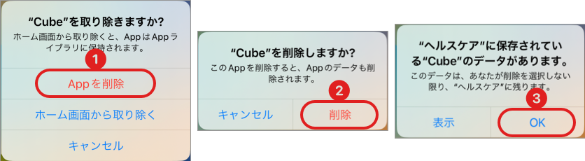
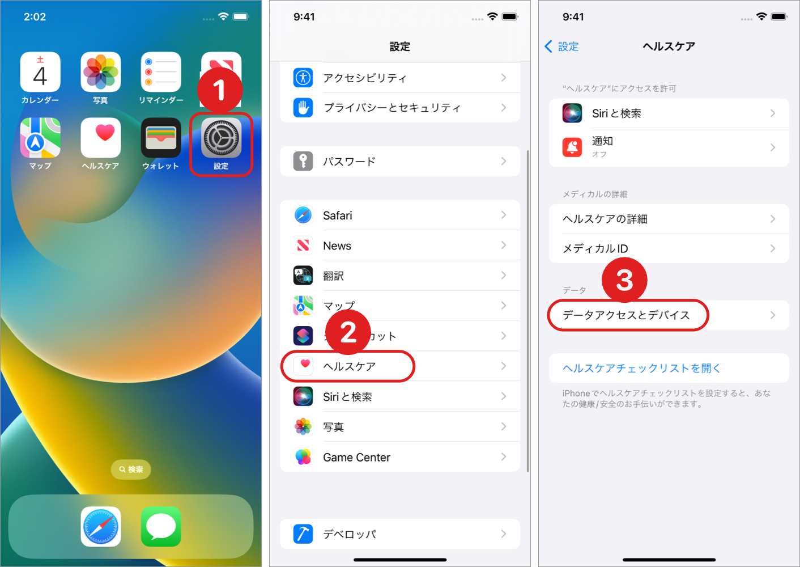

アプリで記録した情報は、Apple ヘルスケアにて保存しています。
それ以外の外部サーバーなどには一切保存していません。
そのため、ヘルスケアから削除されたデータは復元できませんのでご注意ください。
アプリを削除しても、記録データは残ります。
記録データを全て削除したい場合は、以下の手順で削除ができます。
削除されたデータは復元できませんので、ご注意ください。
アプリを削除する際には記録データを残すか、残さないかを選択可能です。
目的にあった選択をしてください。
iPhoneアプリを削除する際、以下のダイアログが表示されます

「削除」を選択すると、続けて以下のダイアログが表示されます。

記録情報を残したい場合には「残す」を選択してください。
ここで「削除」を選択すると、すべての情報が削除されます。
削除すると復元はできません。
ご注意をお願い致します。
iCloudやiTunesのバックアップから、端末の復元も可能ですが、"ヘルスケアデータのみ復元" ということはできません。
iPhoneのバックアップを利用してデータを移行してください。
バックアップの方法は、Apple ヘルスケア情報をバックアップするを参照してください。
iTunesでバックアップを行う場合「バックアップを暗号化する」にチェックを必ず入れてください。
Premiumを購入済みの場合は、新しい端末でアプリをインストール後に購入を復元することができます。